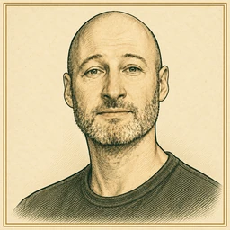

The living record
Club History
A record assembled from what the Club can substantiate. Its past is considered important enough to preserve, but not to improve by invention.
Origins
The friends were already gathering when Justin found a name for what they did. He remembers coming home from a family trip to Germany in autumn 2022 and telling the others that theirs was a Stammtisch. The journey is easier to date than the conversation. The Club’s records mention celebrity selections in November 2024 and a draft constitution the following February. By December 2025, Marc, Matt, Ken, Jamie, Jerome and Justin had a web address and a crest with room for all six faces.

Gathering together
Six calendars posed a practical difficulty. As Justin remembers it, the friends knew that if they had to find a free evening afresh each month, they might never meet. They gave Stammtisch a standing date. The appointment today is the third Friday at eight, Toronto time, often at headquarters.
At many gatherings, one or two members take a turn preparing a special cocktail. Marc gave that tradition a place in the written record when he contributed Kingston Windfall and Daq in Black to the Annals. The company has also fielded a Mud Hero obstacle-course team. The 2025 notes preserve some of the discussion about the shirts.
Club record · Kingston Windfall · Daq in Black (Amaro Nonino Edition)
Annual Assemblies
Justin remembers the friends going to the cottage together before the COVID-19 pandemic. When the weekend acquired its present title, the Annual Gentlemen’s Assembly, is still open. A surviving notice scheduled a Gentlemen’s Assembly for 16 January 2026. The next one on the calendar is 5 February 2027 in Huntsville.
Developing traditions
In Celebration of Life, each member keeps a list of fifty names. When someone on a member’s list dies, that member gives a speech at the next Stammtisch about the person and what they gave the world. The standings have their own page. The gathering makes time for the life.
The December gathering has a name of its own, Christisch, and the gifts come from the members’ own homes. Justin thinks he remembers the exchange in December 2025, though he is unsure of the year. The first Christisch is still to be dated.
Contributors to Club History

Justin Marc
Marc